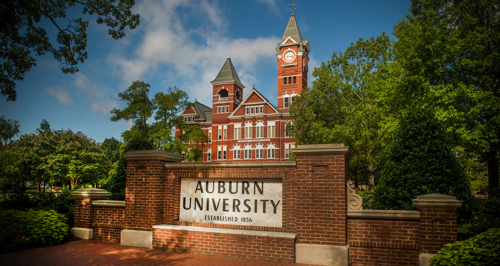

When you first get the dog from Auburn University they are around nine(9) months old or close to a year old. The first step when recieving a dog from Auburn and the program manager is to check that dog for any injuries, cuts, or sickness because once you have that dog in your care you are responsible for the welfare of that K9. If it came with injuries and you didn't document them or advise the Program Manager of the Dogs injuries or what have you then you are responsible for it and you have to take the blame for that dogs injuries or whatever the issue is with it. Also after the snout to tail check (the term we use when examining a dog for injuries or such) of the dog you will then bath the dog because more times than not the dog has a oder to them because at Auburn University they are kept in big kennels and hasn't been bath at all, so when we get them they sleep in our cells with us in a crate/kennel.
After you have recieved a puppy (which is what we refer to the dogs that we just recieve from Auburn because they are so young and they don't know anything but how to play and wanting to play all the time.) from Auburn you have to spend a lot of indepth time with it for the first week to 10 days because you have to train them to use the restroom outside and not in the kennel or in the room. Because they are so young and have been in a big kennel the first part of their lives that is all they know is to use the restroom wherever they are at because they never had a desinated area where they had to go. So there are going to be accidents and messes you have to clean up because until they get use to going outside to break (which is the term we use and teach them to go to the restroom while we are outside or in the desinated area.) they will go in the hallways, dayroom, your cell, and their kennel. Also in these first 7 to 10 days you are teaching the dog it's name so that when you do let them off the leash they will acknowledge you when you are calling for them to come to you. So we play a game with them that we call recall that gets them use to their names and wanting to come back to you, because to them all they are doing is playing because you are throwing a toy for them to run and get and bring it back to you so you will play with it.
After the first 10 days or so You are ready to progress with your dog because by this time they should listen to you when you are talking to it or calling it to you. The next step in their training is to introduce them to the scent that they will only ever smell while they are with you because it is a solution that Aburn University produces themselves and once they leave us they will never incounter that smell ever again. Once they know the scent we put the scent in what we call a box (which at first we start with one and go up to four while they are in this faze of their training.) and we leave them on one box a week and then we gradually increase the boxes until they get to four of them. This usually takes a couple of weeks three at the most and then they graduate to the wall of boxes which has 12 of them on it. We train them on this wall for two weeks and see how they are retaining the knowledge of working the boxes and finding the scent and then we move them to aid placement (which is the scent). Then we move them on to moving targets and places with lots of people and activities going on so that they keep their focus and not want to run off and do other things that they are not suppose to do.
We keep the dogs for about three months or as we say 12 weeks before they are sent to AMK9 for their further training and placement. Some times we do have to keep some dogs longer than others because they are not learning it as fast as some of the other dogs or they may have what we call enviromental issues. When we have a dog that has enviromental issues we have to get them around whatever it is they are scared of or don't like. Some of the dogs don't make Vapor Wake and Aburn will use them for other projects or they will make some of them TAs because they know what they are doing and suppose to do so we use them to help train new guys coming into the program. This is one of the best programs that I have ever been a part of and not only do you get to be around dogs and interact with them you actually get to learn things you never knew about dogs and their behaviors. Not only do you get hands on training with the dogs through a college, you can also get an accosiates degree through Aburn University and Adam State University. They have partnered together to make it possible because you get your electives through Aburn University and your core classes through Adam State University.
We train dogs for different branches of the Military, ATF, NYPD, and Walt Disney World. When we get through training a dog it will then be called a Vapor Wake K9 after it goes to AMK9 for the actual training on the different explosive materials that can be used to fashion a bomb. These dogs will be very independent and very attentive to their Handlers and making sure they understand when a area is clear or if there is a bomb in the area. These dogs are so smart and sophisticated that they can track a person carrying a bomb on their person or in a purse or backpack. Also, we have had dogs that detected a bomb inside a warehouse that was over a hundred yards away from it because the dog was on one side of the warehouse and the bomb was on the other side. These are considered working dogs that have a job to do and there reward for detecting a threat or bomb is a toy. When a Vapor Wake K9 has graduated it can and will be sold to whoever needs it for the purpose it was trained for around $20,000-$70,000 based on how well that dog porformed in it's final testing and detection.
So when out and about and you see one of these dogs working just know they are also keeping you safe as well as the people they are working for. Yes at the end of the day they are a animal and they need love just like your pet at home but just remember they have a job to do and that is what drives them. These dogs love to play just like any other K9 but they also know they have a job to do and they know their job comes first. These dogs watch everything and watch everyone because at the time they are working they want to make sure they know where the threat is coming from.